Summer Fashion Lookbook: Fourth Quarter
Our final collection showcases styles for the architects, innovators, and empaths among us. These distinct personalities find expression through carefully crafted garments that embody their inner worlds and aspirations.
For Architects
DRESSING FOR AMBITION
Strategic clothing selections for those who naturally see the structures behind everyday experiences. This personality type has a natural inclination towards strategy, structure, and achievement. Possessing sharp analytical skills and a pragmatic approach to life, they excel at setting and accomplishing ambitious goals. Their emotional landscape is characterized by determination, practicality, and a strong drive for success and recognition.
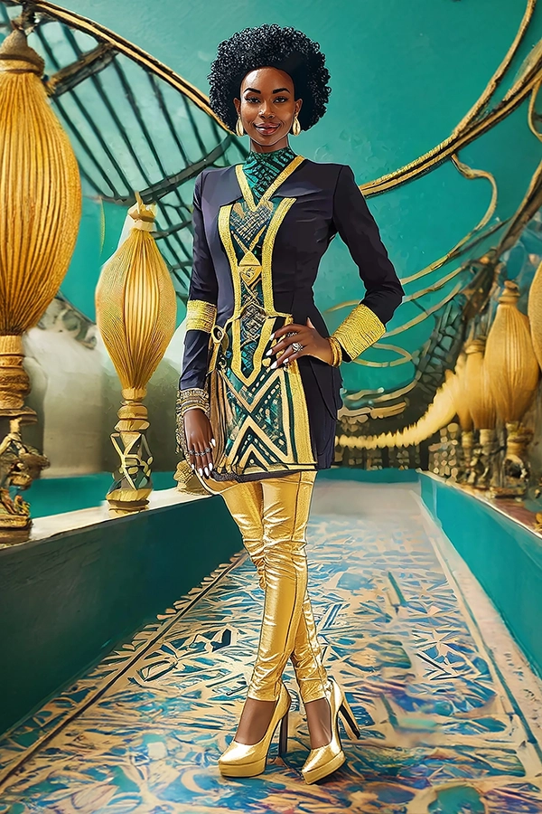
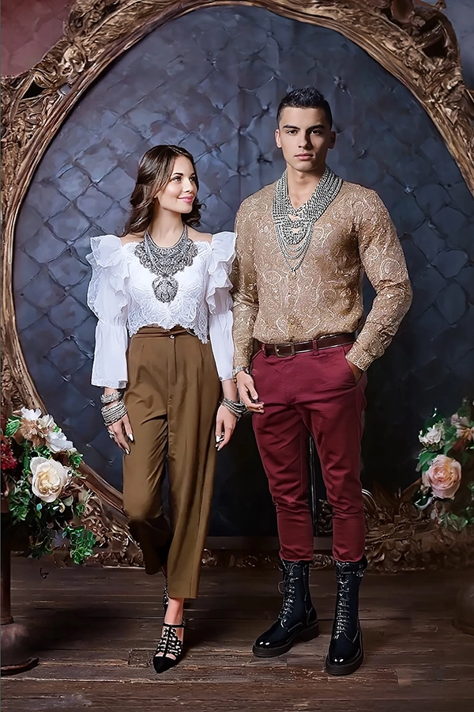
Brutalist Powerhouse
Outfit A
Architectural pencil skirt with structured details. Commanding block heels. Men's performance-cut trousers. Angular high-neck top with intentional simplicity. Raw concrete-inspired textures. Cool grays with industrial touches.
Accessories: Sculptural metal jewelry. Raw stone elements. Architectural timepieces.
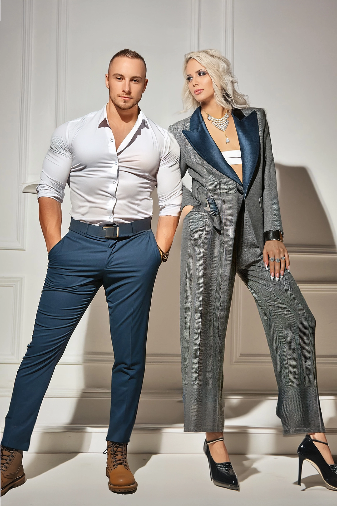
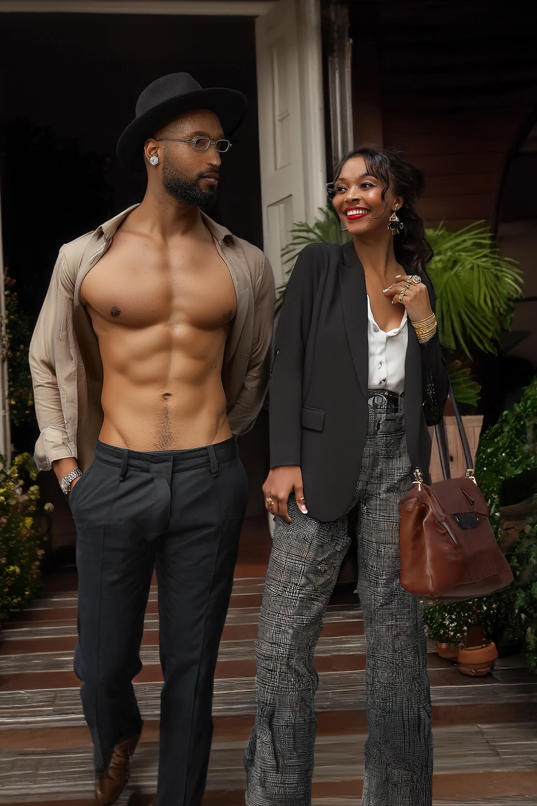
Outfit B
Strategic utilitarian cargo skirt. Status loafers. Men's performance-engineered pants. Structured sweater with purpose-driven details. Monolithic silhouettes. Industrial palette of concrete grays and blacks.
Accessories: Sculptural metal jewelry. Raw stone elements. Architectural timepieces.


Constructivist Power
Outfit A
High-status A-line midi skirt. Confidence-boosting heels. Men's impeccable business trousers. Structured square-shoulder blouse with decisive details. Success-oriented silhouettes. Distinguished charcoal, navy, and burgundy palette.
Accessories: Status watches. Geometric cufflinks. Executive leather portfolios.
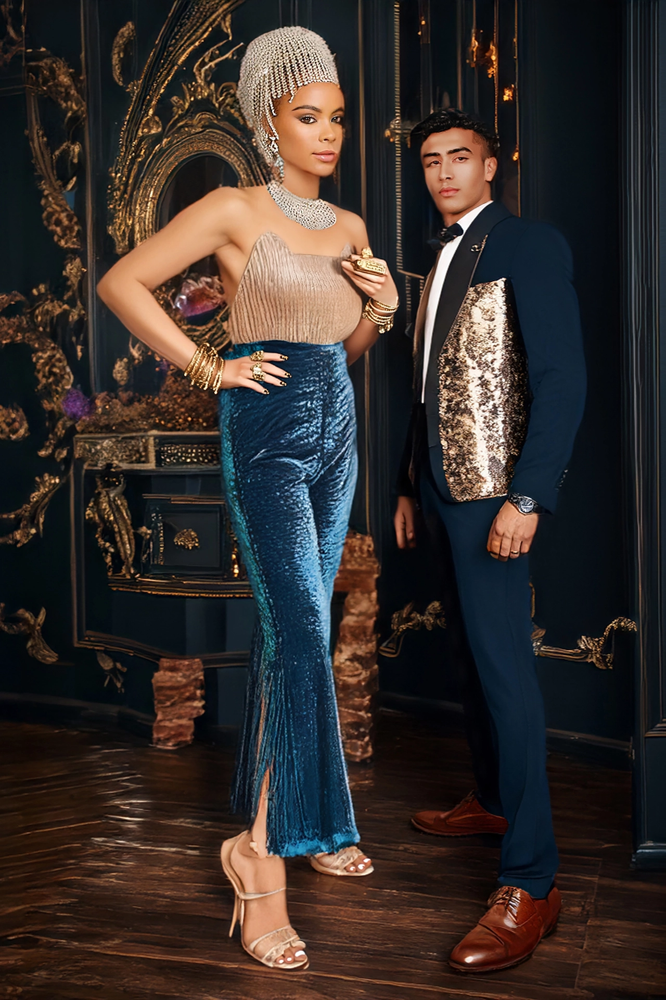

Outfit B
Achievement-ready tailored pants. Strategic statement shoes. Men's corporate-climb suit separates. Command-presence blouse with authoritative details. Reputation-building lines. Legacy-creating color palette.
Accessories: Status watches. Geometric cufflinks. Executive leather portfolios.
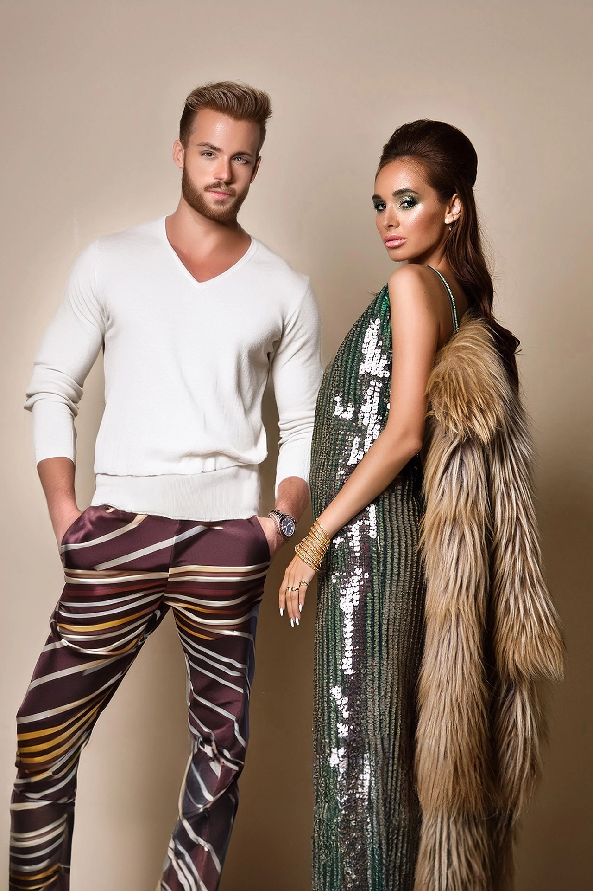

For Innovators
DRESSING THE VISIONARY
Forward-thinking attire for those who naturally see new ways forward. This personality type has an inherent drive towards innovation, originality, and unconventional thinking. Characterized by intellectual curiosity and a progressive mindset, they approach life with a desire to improve existing systems and create new possibilities. They possess a unique ability to envision alternative futures and challenge established norms. Their emotional landscape is defined by a sense of detachment, cerebral engagement, and occasional idealism.
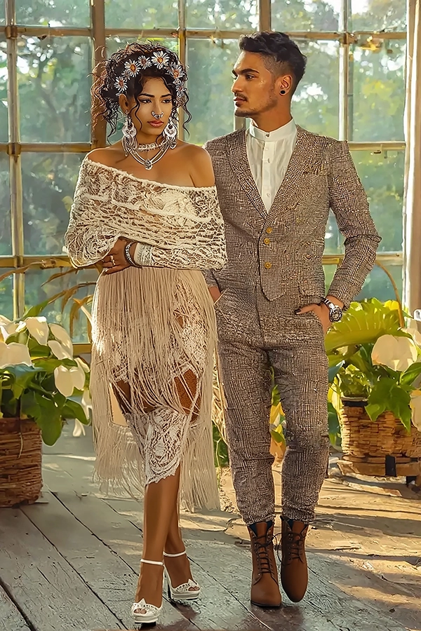
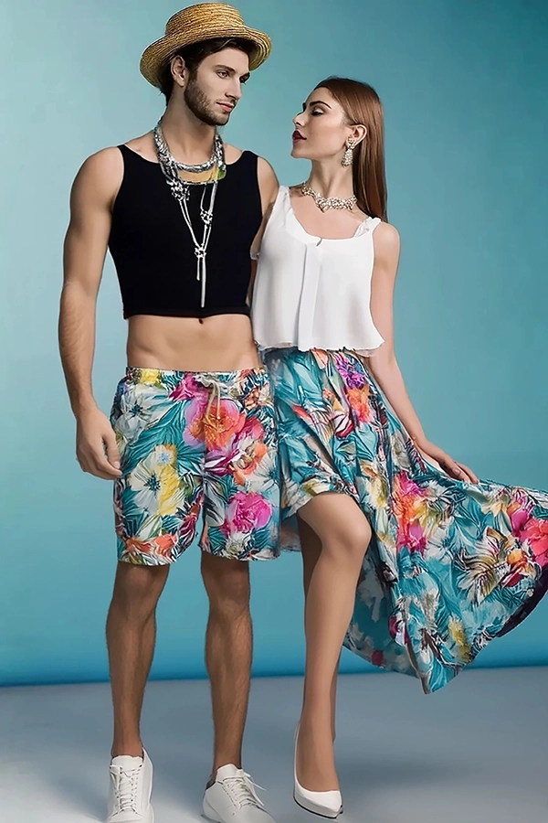
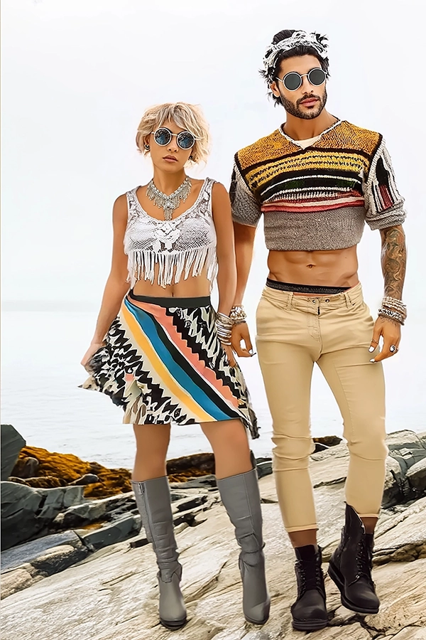
Avant-Garde Forward
Outfit A
Experimental deconstructed skirt. Conceptual platform shoes. Men's futuristic wide-leg trousers. Multi-functional convertible top with technical elements. Unorthodox cutting techniques. Technology-inspired prints and patterns.
Accessories: 3D-printed jewelry. Sustainably reimagined materials. Digital-age inspired bags.
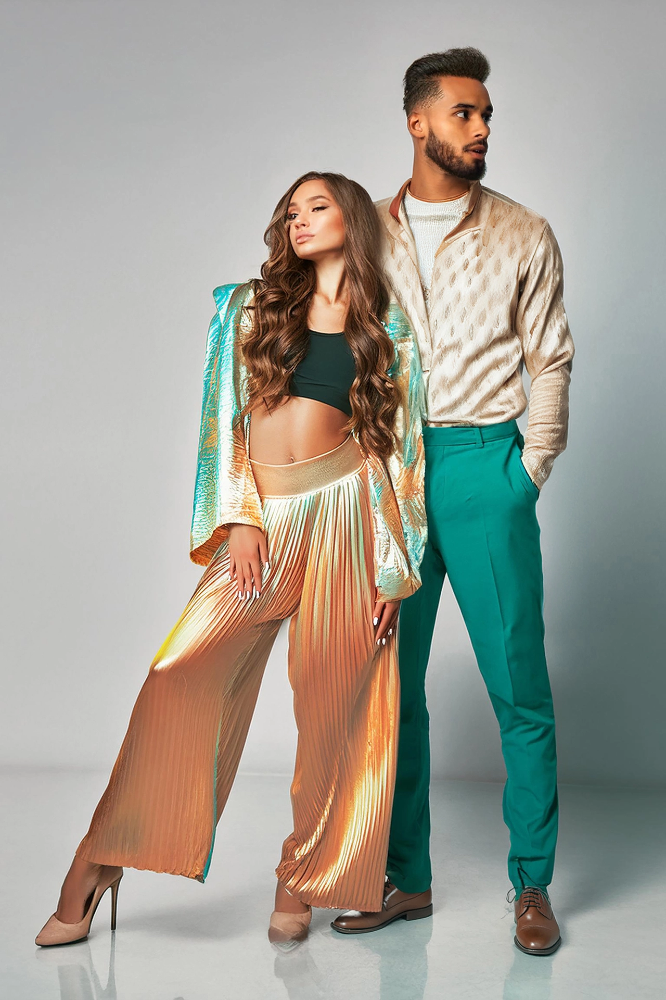

Outfit B
Asymmetrical intellectual midi skirt. Progressive wedge heels. Men's unconventional tailoring. Intellectually stimulating top with scientific illustrations. Boundary-pushing proportions. Forward-thinking color combinations.
Accessories: 3D-printed jewelry. Sustainably reimagined materials. Digital-age inspired bags.
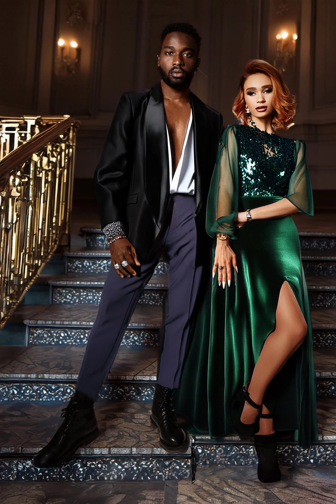
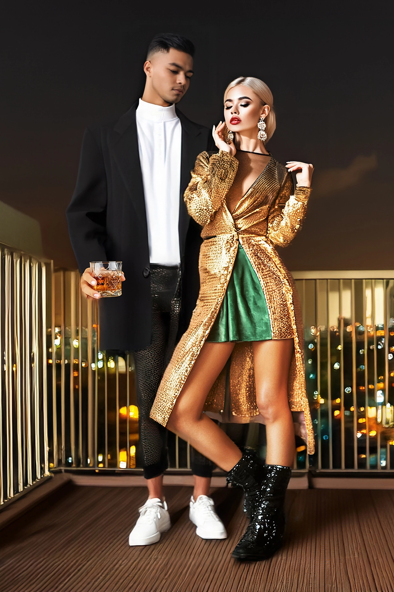
Retrofuturism Revolution
Outfit A
Humanistic flared pants with progressive cut. Progressive transparent footwear. Men's boundary-breaking jackets. Socially conscious blouse with humanitarian message prints. Inclusive design elements. Optimistic color palette.
Accessories: Upcycled statement pieces. Zero-waste designs. Cause-supporting emblems.


Outfit B
Revolutionary jumpsuit with community-conscious details. Unisex footwear innovations. Men's paradigm-shifting suit alternative. Equality-focused gender-neutral top. Mindful sustainability built into design. Inclusive, welcoming palette.
Accessories: Upcycled statement pieces. Zero-waste designs. Cause-supporting emblems.


For Empaths
DRESSING THE ETHEREAL
Clothing that celebrates the unseen connections that bind us. This personality type has a natural sensitivity to emotional undercurrents and spiritual dimensions. Characterized by intuition, compassion, and deep emotional understanding, they approach life with an awareness of subtle energies and interconnections. They possess a unique ability to sense others' feelings and often serve as emotional bridges between people. Their emotional landscape is defined by receptivity, empathy, and occasional overwhelm from absorbing others' energies.
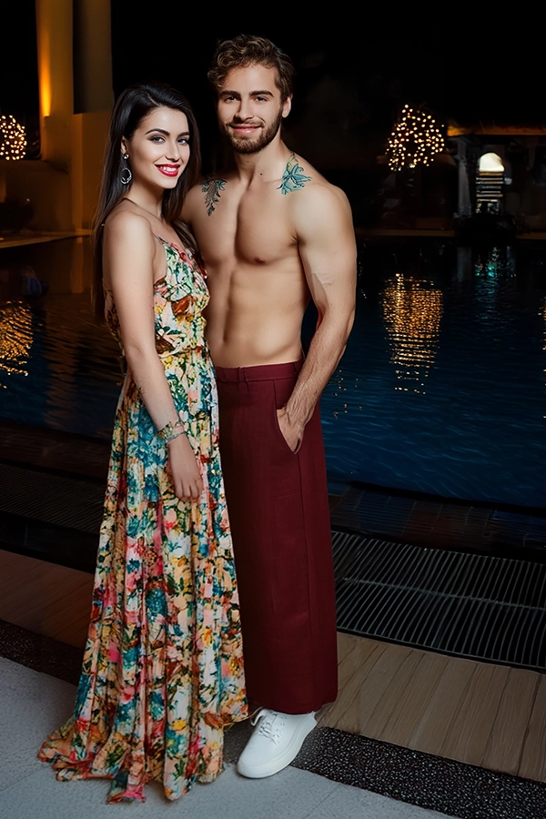
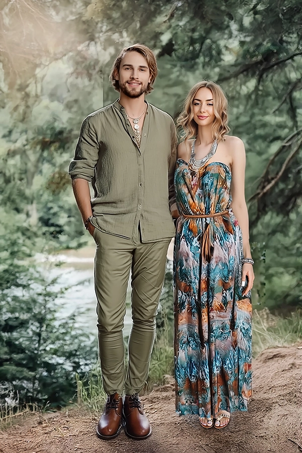
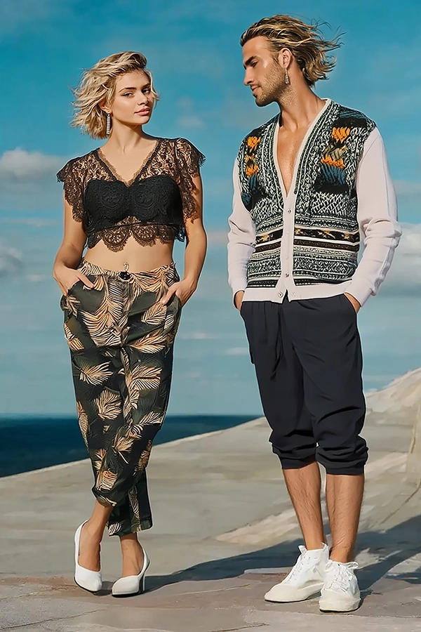
Romantic Dream Weaving
Outfit A
Flowing chiffon maxi skirt, ethereal movement. Barely-there sandals. Men's relaxed beach pants. Dreamy watercolor-print blouse with fairy-tale details. Gossamer-light layers. Opalescent pearl tones with soft pastel accents.
Accessories: Sea glass jewelry. Delicate fairy-inspired pieces. Iridescent elements.
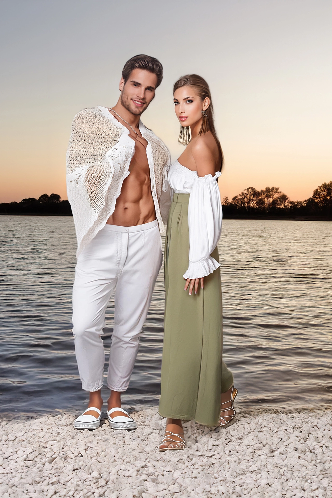
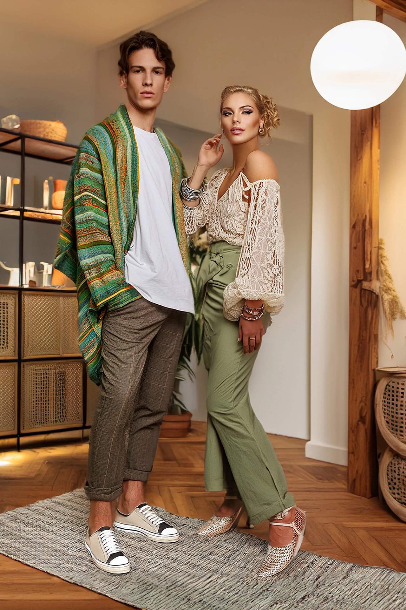
Outfit B
Ethereal slip dress, watercolor ocean prints. Barefoot-inspired sandals. Men's loose meditation pants. Mermaid-inspired top with luminescent sheen. Otherworldly draping. Aquatic blues and greens with mother-of-pearl highlights.
Accessories: Sea glass jewelry. Delicate fairy-inspired pieces. Iridescent elements.


Symbolic Spiritualist
Outfit A
Intuitive wrap skirt with symbolic patterns. Grounding minimal sandals. Men's shamanic-inspired layers. Spiritual symbol-adorned blouse with cosmic illustrations. Protection-providing loose cuts. Crystal-inspired color palette.
Accessories: Healing crystal jewelry. Zodiac-themed pieces. Amulet-style necklaces.

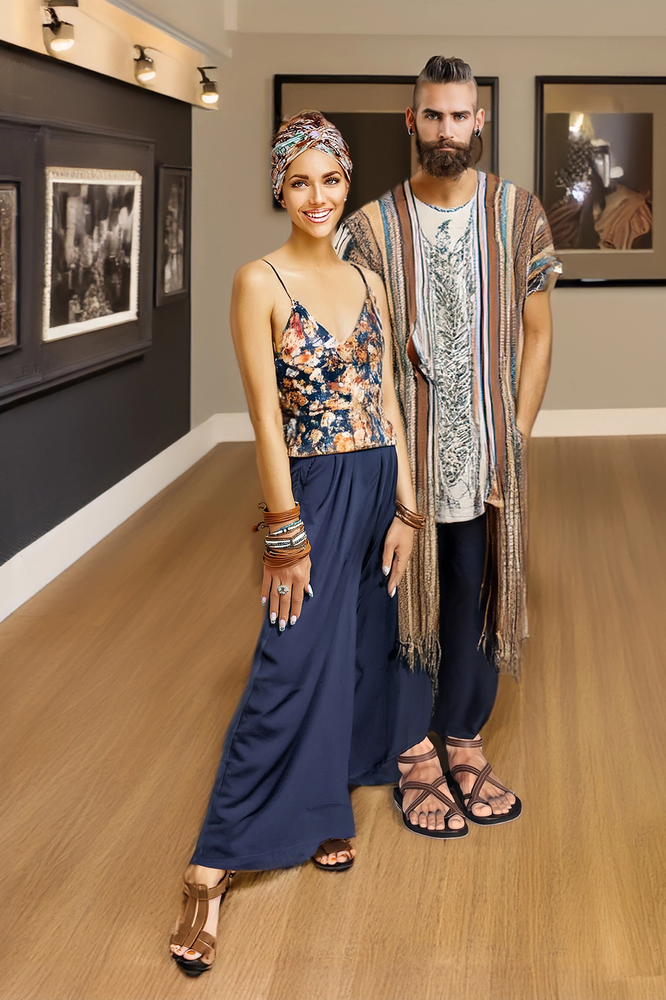
Outfit B
Energy-protecting caftan dress. Barefoot-inspired footwear. Men's ceremonial-inspired ensemble. Channeling cowl-neck top with celestial motifs. Mystical drapery. Aura-inspired color combinations.
Accessories: Healing crystal jewelry. Zodiac-themed pieces. Amulet-style necklaces.
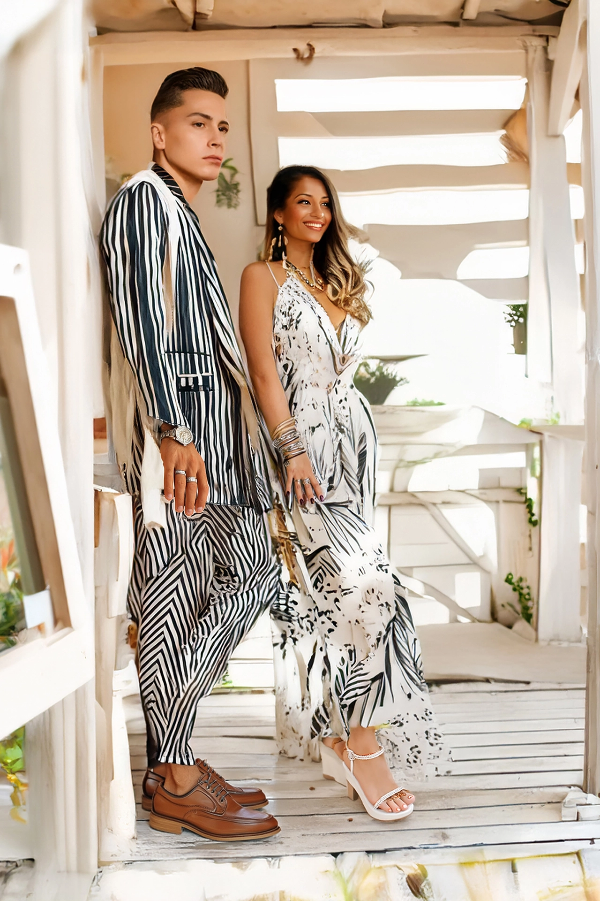

Zodiac Archetypes: Where Fashion Meets Personality
This lookbook represents a journey through personality archetypes, translated into fashion expressions that honor individual essence. Each collection acknowledges the multifaceted nature of human personality and provides thoughtful wardrobe solutions that respect and celebrate these unique qualities. As you explore these carefully curated selections, we hope you discover pieces that resonate with your authentic self, allowing your inner world to find beautiful outward expression.